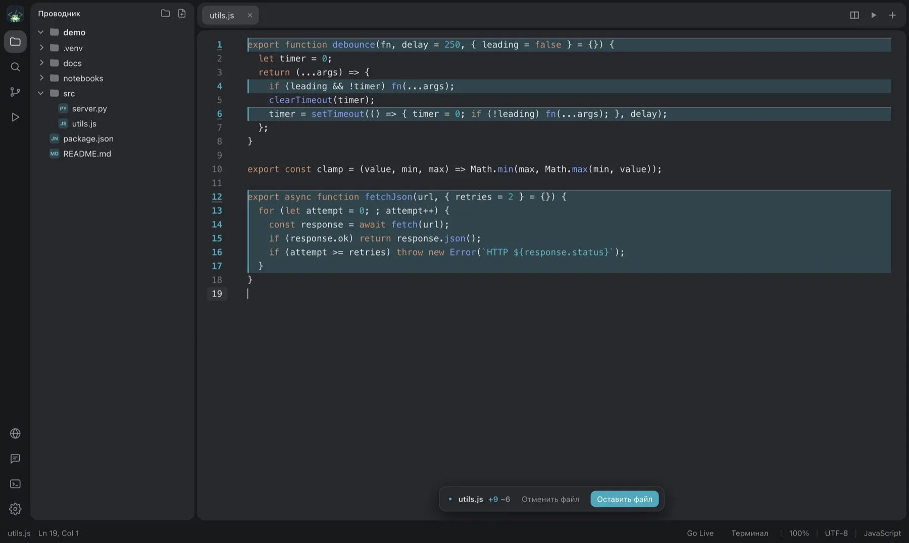
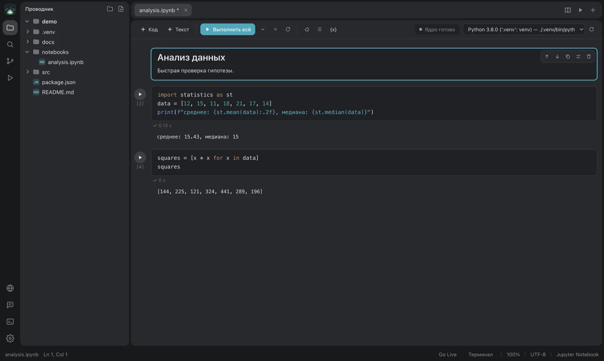
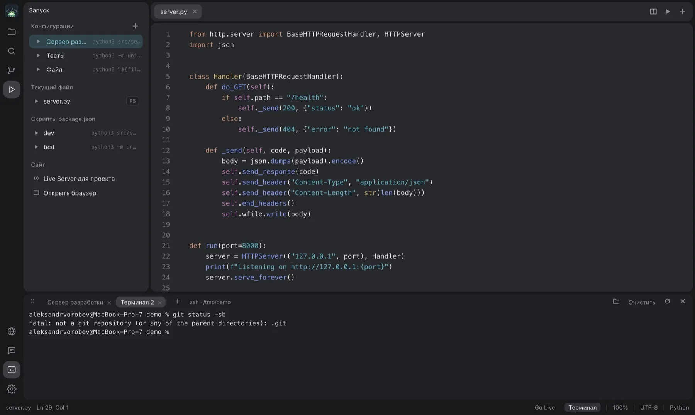

FrogeeCodeIDE
Редактор кода с локальным ИИ, файлами проекта и проверкой правок.

Лёгкая IDE на Electron. Подключите Ollama, LM Studio или свой провайдер: чат видит файлы проекта и предлагает правки. Решение об изменениях остаётся за вами.
Установить
GitHub
Бесплатно · MIT · macOS, Windows, Linux
Что внутри
ИИ, который не уносит код
- Чат с Ollama, LM Studio, OpenRouter и любым совместимым провайдером.
- Файлы проекта как контекст, правка и перегенерация сообщений.
- Изменения подсвечиваются в редакторе: «Оставить» или «Отменить» для каждого файла.

Ноутбуки и запуск
- Jupyter-ноутбуки: сама находит виртуальные окружения и даёт выбрать ядро.
- Конфигурации запуска, скрипты из
package.json, несколько терминалов. - Live Server и встроенный браузер, предпросмотр Markdown, просмотр картинок.

Привычный редактор
- Подсветка синтаксиса, диагностика, поиск и замена, поиск по проекту.
- Проводник с перетаскиванием файлов между папками.
- Несколько окон, меню в Dock, вкладки восстанавливаются после перезапуска.
- Светлые и тёмные темы в JSON, на macOS - прозрачное окно Liquid Glass.

Установка
Готовых установщиков пока нет: соберите программу из исходников, это пара минут. Нужен Node.js 18 или новее.
# скачать и запустить git clone https://github.com/ArduRadioKot/ForgeeCodeIDE cd ForgeeCodeIDE/src/code-redactor npm install npm start # собрать установщик npm run build:mac # .dmg npm run build:win # установщик Windows npm run build:linux # AppImage и deb
Платформы
macOS проверена полностью. Windows и Linux собираются, но вместо размытия окна там непрозрачная тема.
Плагины и темы
Как в FgSNotes: файлы .js и .css в ~/Documents/FrogeeCodeIDE/plugins. Свои темы кладутся в папку themes.
Лицензия
MIT, FrogeeSoft. Готовая сборка появится в релизах на GitHub.